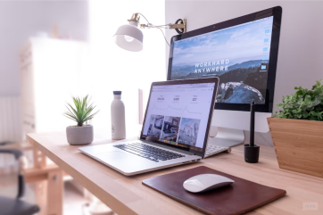

Om projektet och oss
Projektbeskrivning
-Tillverka en fristående digital upplevelse baserat på årets tema. -Varje disciplin ska få chansen att synas och tillföra sin specialitet till projektet. -Slutprodukten ska existera på en för ändamålet byggd webbplats. -Sammanslaget är alltid ett goodwillprojekt med en riktig kund. -YRGO och studenterna tar inte ställning till kundens värderingar.
Kunden är BjörkåFrihet
Gruppens tolkning av theory of change: Förstå individens miljöpåverkan
på ett roligare sätt genom ett spel.
Alice
Studerar webbutveckling.
Möjliggjort att spelet kan existera på webben samt arbeta med
interaktivitet och implementation.

Gabriel och Joella
Studerar UX-design.
Lett idégenerering och designprocess, säkerställa att webbplats och
bidrag är lätta att använda.

Carl
Studerar Game Creator Programmer.
Har utvecklat interaktivitet och implementera tillverkade delar.
Olivia
Studerar Game Creator Artist.
Har tillverkat grafik väl anpassad för en realtidsapplikation på
webben.